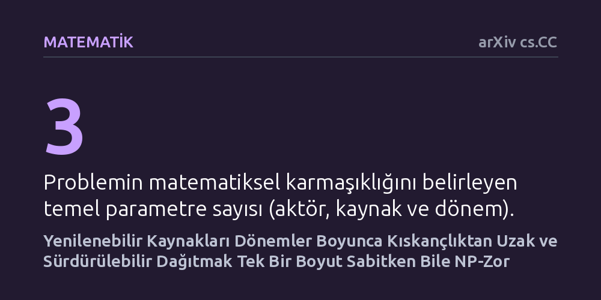

MATEMATIK · arXiv cs.CC · 2026-10-21
Araştırmacılar, kendini yenileyen kaynakların aktörler arasında zamana yayılan dönemlerde hem sürdürülebilir hem de kıskançlıktan uzak paylaştırılmasının hesaplama zorluğunu inceledi. Aktör, kaynak veya dönem sayısından biri sabit tutulsa dahi problemin NP-zor olduğu, çözümlerin ancak çok kısıtlı yenilenme kurallarıyla bulunabildiği belirlendi.
Ortak varlıkları tüketmeden ve kimseyi mağdur etmeden adilce paylaştırmanın yalnızca ahlaki değil, aynı zamanda çözülmesi matematiksel olarak son derece güç bir hesaplama problemi olduğunu gösteriyor.

Balıkçılık kotaları, temiz su rezervleri, mera otlatma hakları veya orman ürünleri gibi ortak kaynakların kullanımı, insanlık tarihinin en kadim sorunlarından biridir. Bir toplulukta herkesin bu kaynaklardan hakkını adil şekilde alması istenir; ancak bugünün aşırı tüketimi yarının kaynağını tamamen yok edebilir. Dolayısıyla adil bir dağıtım planı, yalnızca bugünkü memnuniyeti değil, kaynağın zaman içinde kendini nasıl yenilediğini de hesaba katmak zorundadır.
İktisat ve bilgisayar biliminde "kıskançlıktan uzaklık" kavramı, hiçbir katılımcının başka birine tahsis edilen payı kendi payına tercih etmemesi durumunu ifade eder. Kaynaklar tek bir an için dağıtıldığında bu dengeyi kurmak görece kolay olsa da, süreç birden fazla döneme yayıldığında ve her dönemdeki tüketim bir sonraki dönemin kapasitesini doğrudan etkilediğinde işler hızla karmaşıklaşır.
Araştırmacılar tam olarak bu çatışmayı masaya yatırıyor: Zaman içinde belirli kurallarla kendini yenileyen sınırlı kaynakları, aktörlerin birbirini kıskanmayacağı ve sistemin sürdürülebilirliğini tehdit etmeyecek şekilde paylaştırmak hesaplama açısından ne kadar mümkündür?
Yazarlar bu soruyu ampirik bir saha deneyiyle değil, teorik bilgisayar biliminin biçimsel ispat yöntemleriyle ele alıyor. Oluşturulan matematiksel modelde problem üç temel boyuta ayrılıyor: pay talep eden aktörlerin sayısı, paylaştırılacak yenilenebilir kaynakların sayısı ve planlamanın yapılacağı zaman dönemlerinin sayısı. Kaynakların zamansal davranışları ise biyolojik veya fiziksel yenilenmeyi temsil eden matematiksel fonksiyonlarla tanımlanıyor.
Analizde bilgisayar biliminin temel araçları olan hesaplamalı karmaşıklık ve parametreli karmaşıklık kuramları kullanılıyor. Araştırmacılar, sayıların bilgisayarda tek tek çetele gibi tutulduğu tekli kodlama ile ikili tabanda sıkıştırılarak saklandığı ikili kodlama durumlarını ayrı ayrı sınıyor. Amaç, problemin hangi parametre sınırları altında pratik bir sürede çözülebileceğini, hangi durumlarda ise algoritmik olarak kilitlendiğini kesin matematiksel sınırlarla göstermek.
Çalışmanın en temel bulgusu, adil ve sürdürülebilir bir dağıtım planı bulmanın hesaplama açısından son derece acımasız olduğunu ortaya koyuyor. Aktör sayısı, kaynak sayısı veya dönem sayısından herhangi biri küçük ve sabit bir değer olarak belirlense bile, problem NP-zor sınıfında kalmaya devam ediyor. Üstelik bu zorluk, sayısal girdilerin en basit ve açık biçimde verildiği tekli kodlama durumunda dahi aşılamıyor.
Peki bu üç boyuttan ikisini birden küçük tutarsak ne oluyor? Araştırmacılar, iki boyutun sınırlanmasının genel bir kurtuluş sağlamadığını, sonucun seçilen boyut ikilisine ve yenilenme fonksiyonunun türüne göre değiştiğini gösteriyor. Örneğin az sayıda kaynak ve az sayıda dönem olduğunda ikili kodlanmış genel problemler çözülemezliğini korurken, tekli kodlamada dilimlenmiş üstel zamanlı (XP) algoritmalar devreye giriyor. Az sayıda kaynak ve aktör olduğunda ise problem ancak yenilenme kuralları basit öteleme biçimindeyse çözülebilir hale geliyor.
En umut verici durum az sayıda aktör ve dönemin bulunduğu senaryoda ortaya çıkıyor. Bu koşulda problem sabit parametreli olarak çözülebilir (FPT) sınıfına girse de, standart karmaşıklık varsayımları altında girdi boyutunu polinom düzeyinde küçülten bir çekirdek algoritmanın kurulamayacağı kanıtlanıyor.
Bu teorik sonuçlar, ortak kaynakların yönetimiyle ilgili politikalar tasarlayan kurumlar için önemli bir uyarı niteliğindedir. Bir balıkçılık havzasında veya enerji şebekesinde herkese tamamen eşit ve kıskançlıktan uzak bir pay dağıtırken ekosistemin çökmesini engellemek, masa başında kusursuz bir optimizasyonla çözülebilecek basit bir planlama değildir. Sistemdeki değişkenlerden yalnızca birini veya ikisini kısıtlamak, algoritmaların tıkanmasını engellemeye yetmemektedir.
Dolayısıyla çok dönemli ve yenilenebilir kaynak tahsisinde, her aktörün mutlak anlamda kıskançlıktan uzak olduğu kusursuz çözümler aramak yerine, yaklaşık çözümler veya basitleştirilmiş yenilenme dinamikleri sunan sezgisel mekanizmalara yönelmek gerekmektedir. Matematiksel analiz, adalet ile sürdürülebilirlik arasındaki kesişim noktasının doğası gereği hesaplama sınırlarını zorladığını açıkça göstermektedir.